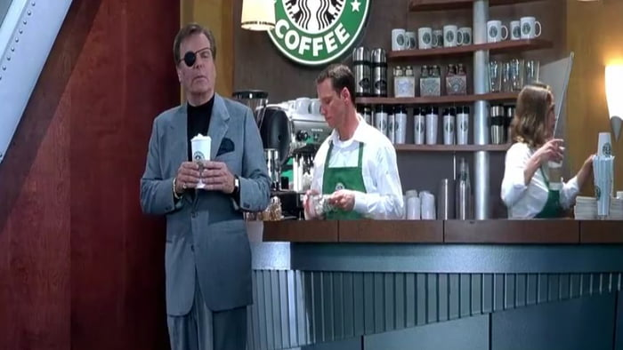

| Issue 1 | 0730 | I woke up late | Dog refuses to poop on concrete | Two mile walk to dog park | Missed the bus and was late for work |  |
| Issue 2 | 0930 | No coffee | I ran out of kcups | Had to commute to starbucks | Paid $9 for a $1.50 coffee |  |
| Issue 3 | 1100 | I forgot to charge my vape | I had to buy a pack of ciggarettes | I got addicted to tobacco again | I stink so no one wants to hang with me | |
| Issue 4 | 1700 | Ran late because the dog refused to drop a deuce | I came home to a trail of fecal evidence | I followed the evidence to my bed | I need to go buy a new dog.. and shovel |  |
| Issue 5 | 2100 | I finished the burial | Totally forgot I left the spare keys on his collar | While digging up the dog, the cops show up thinking it's a dead body | I get arrested, all because I woke up late |  |
| Issue 1 | Issue 2 | Issue 3 | Issue 4 | Issue 5 |
| 0730 | 0930 | 1100 | 1700 | 2100 |
| I woke up late | No coffee | I forgot to charge my vape | My dog didnt poop this morning | I finished the burial |
| Dog refuses to poop on concrete | I ran out of kcups | I had to buy a pack of ciggarettes | I came home to a trail of fecal evidence | Totally forgot I left the spare keys on his collar |
| Two mile walk to dog park | Had to commute to starbucks | I got addicted to tobacco again | I followed the evidence to my bed | While digging up the dog, the cops show up thinking it's a dead body |
| Missed the bus and was late for work | Paid $9 for a $1.50 coffee | I stink so no one wants to hang with me | I need to go buy a new dog.. and shovel | I get arrested, all because I woke up late |
| | | | |